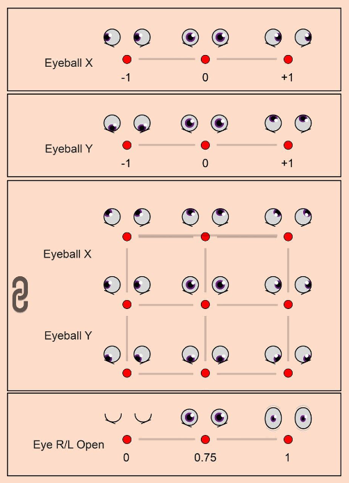
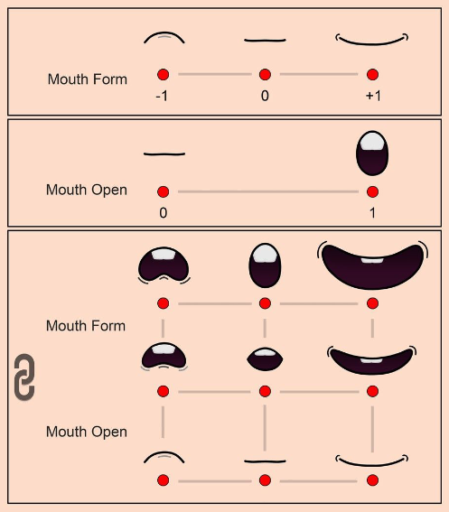
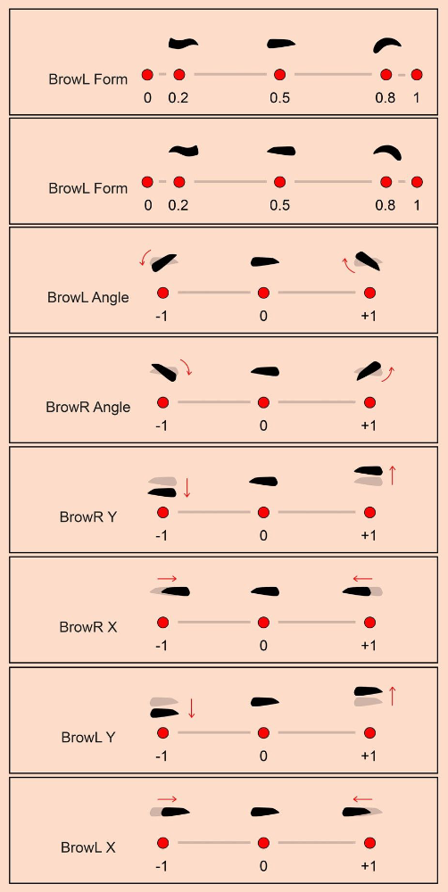
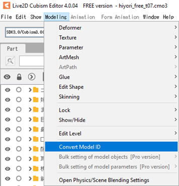
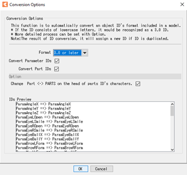
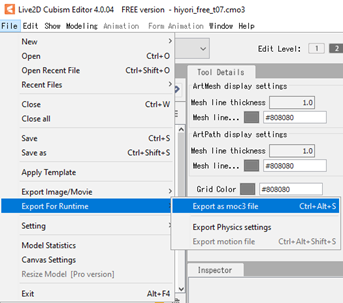
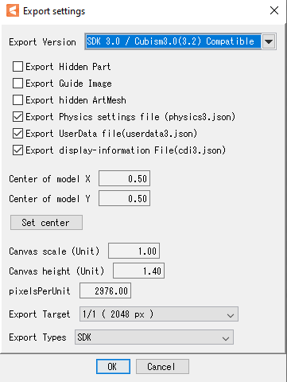

Live2Dモデルの要件とファイル構造
Animazeで変換作業を行うには、お使いのLive2Dモデルがバージョン3.0以上のLive2D Cubism Editorで作成されている必要があります。Cubism 3.0は2017年の春にリリースされているため、その時期以降に作成されたLive2Dモデルはこの要件を満たしていると思われます。
Live2D Cubism 3.0よりも前のバージョンで作成されたモデルを使用する場合、バージョン3.0以降のLive2D Cubism EditorでモデルのLive2Dソースファイルを読み込み、Live2Dランタイムファイルを再度エクスポートしてください。
Live2DのキャラクターがAnimazeのアバターのように適切に動作させるためには、以下のモーションパラメーターの命名規則を更新する必要があります。
運動パラメーターの一覧
以下の表では、Animazeのデフォルトアニメーション規格で使用するために変更する必要のある、FaceRig上の運動パラメーターの命名規則を示します。モデルにFaceRigの列に含まれる運動パラメーター命名規則が含まれている場合、対応するAnimaze用のパラメーターの命名規則に変更する必要があります。
Live2Dパラメーターに関して、Animazeは以下の2つのアニメーション規格をサポートしています：
-
デフォルトは最も広く普及し、事実上全てのVチューバ―のプラットフォームで動作するものです。
-
Live2Dアバターの表現力を向上させることとキートラッキング入力のマッピングを目的とした拡張パラメーターセットは、3Dアバターにのみ対応しています。
拡張パラメーターセットのアニメーション規格の使用に興味がある場合、.avatar技術説明書 > Live2Dチャプター > 拡張パラメーターセット のルールに従ってください。
|
|
FaceRig |
Animaze |
頭の動き |
PARAM_ANGLE_X |
ParamAngleX: 右から左にひねる動き。 |
|
PARAM_ANGLE_Y |
ParamAngleY: 下から上への動き。 |
|
|
PARAM_ANGLE_Z |
ParamAngleZ: 右から左に傾く動き。 |
|
体の動き |
PARAM_BODY_ANGLE_X |
ParamBodyAngleX: 右から左にひねる動き。 |
|
PARAM_BODY_ANGLE_Y |
ParamBodyAngleY: 下から上への動き。 |
|
|
PARAM_BODY_ANGLE_Z |
ParamBodyAngleZ: 右から左に傾く動き。 |
|
|
PARAM_BREATH |
ParamBreath: 息遣いの動き。 |
|
目の動き |
PARAM_EYE_BALL_X |
ParamEyeBallX: 右から左への動き。 |
|
PARAM_EYE_BALL_Y |
ParamEyeBallY: 下から上への動き。 |
|
|
PARAM_EYE_L_OPEN |
ParamEyeLOpen: 閉じた左目を開く動き。この入力のデフォルトの値は、目を完全に開けた状態として使用されます。最大値にすると目を大きく開く動きがリマッピングされ、最小値にすると通常の目を閉じる動きになります。 |
|
|
PARAM_EYE_R_OPEN |
ParamEyeROpen: 閉じた右目を開く動き。この入力のデフォルトの値は、目を完全に開けた状態として使用されます。最大値にすると目を大きく開く動きがリマッピングされ、最小値にすると通常の目を閉じる動きになります。 |
|
|
PARAM_EYE_FORM |
ParamEyeBallForm: 顔をしかめる表情を補完するために目の輪郭を曲げる動き。 |
|
眉毛の動き |
PARAM_BROW_L_Y |
ParamBrowLY: 左の眉毛の下から上への動き。 |
|
PARAM_BROW_R_Y |
ParamBrowRX: 右の眉毛の下から上への動き。 |
|
|
PARAM_BROW_L_ANGLE |
ParamBrowLAngle: 左の眉毛を傾ける動き。 |
|
|
PARAM_BROW_L_DEFORM |
ParamBrowLForm: 左の眉毛の形を変える動き。 |
|
|
PARAM_BROW_R_ANGLE |
ParamBrowRAngle: 右の眉毛を傾ける動き。 |
|
|
PARAM_BROW_R_DEFORM |
ParamBrowRForm: 右の眉毛の形を変える動き。 |
|
口の動き |
PARAM_MOUTH_OPEN_Y |
ParamMouthOpenY: 閉じた口を開ける動き。 |
|
PARAM_MOUTH_FORM |
ParamMouthForm: 悲しい顔から笑顔への動き。 |
|
|
PARAM_MOUTH_SIZE |
ParamMouthSize： 唇をすぼめる運動 |
Animazeのリターゲティングシステムは、パラメーターがどんな値にもなるよう、Live2Dパラメーター適用前に全ての値（0から1）を標準化します。E.G. ParamMouthOpenYは、デフォルトは0で-10から10までを定義するため、Animazeが半笑い-の-0.75と設定した場合、ParamMouthOpenYのパラメーターに5を加えます。
ただし、Live2Dのパラメーターには以下の範囲を推奨しています：
|
アイテム |
最小値 |
デフォルト値 |
最大値 |
|
ParamEyeLOpen ParamEyeROpen |
0 |
0.75 |
1 |
|
ParamEyeBallX ParamEyeBallY |
-1 |
0 |
1 |
|
ParamBrowLY |
-1 |
0 |
1 |
|
ParamBrowLX |
-1 |
0 |
1 |
|
ParamBrowLAngle ParamBrowRAngle |
0 |
0.5 |
1 |
|
(*)ParamBrowLForm (*)ParamBrowRForm |
0.2 |
0.5 |
0.8 |
|
ParamMouthForm |
-1 |
0.5 |
1 |
|
ParamMouthOpenY |
0 |
0 |
1 |
|
(*)ParamMouthSize |
-1 |
0 |
1 |



(*)ParamMouthSizeは非標準のLive2Dパラメーターで、唇をすぼめる動き用にAnimazeでオプション的に使用されます。
口のデフォルトサイズはパラメーターの範囲の真ん中で、最小値に近づけることで口を縮め、最大値に近づけることで口を大きくします。
Animazeは間隔の前半半分（最少から真ん中まで）のみを使用します。間隔の具体的な値は、0が口のデフォルトサイズで-1から1と推奨されていますが、強制ではありません。
(*)表内のParamBrowLFormとParamBrowRFormの値は、現在のトラッキングシステムで眉毛を意識的に変形させます。

また、こことここから標準Cubismパラメーターを確認することができます。
過去のパラメーターをAnimazeが使用しているパラメーターに変更する方法の詳細は下記です：
例えば、使用中のLive2DキャラクターがPARAM_ANGLE_Xの運動パラメーターを使用する場合、そのパラメーター名を「ParamAngleX」へ変更し、Animazeとの互換性があることを確認する必要があります。この変換はCubism Editorで行うことが可能です:
-
「モデリング」メニューで「モデルIDの変換」を選択します

-
変換ファイルを示すポップアップウィンドウが表示されます。「フォーマット」で「3.0以降」を選択し、「OK」をクリックします。

-
ランタイム用にファイルをエクスポートします:


2Dアバターに待機アニメーションを作るには、アバターがジェネリックな位置（たいていは呼吸のアニメーション）にある選択済みパラメーターを動かして、ループ可能なを作成する必要があります。最初と最後のアニメーションのフレームは必ず同一である必要があります。
Live2DモデルをAnimazeにインポートするには、モデルのLive2Dランタイムファイルが必要です。必要なファイルが、標準のフォルダー階層に整理されている必要があります。
さらに、model3.jsonファイルと.moc3ファイルのファイル名は同一である必要があります（例: myavatar.moc3とmyavatar.model3.json）。それぞれのファイル名が異なっている場合、Animazeでモデルの一連のファイルをインポートできないことがあります。